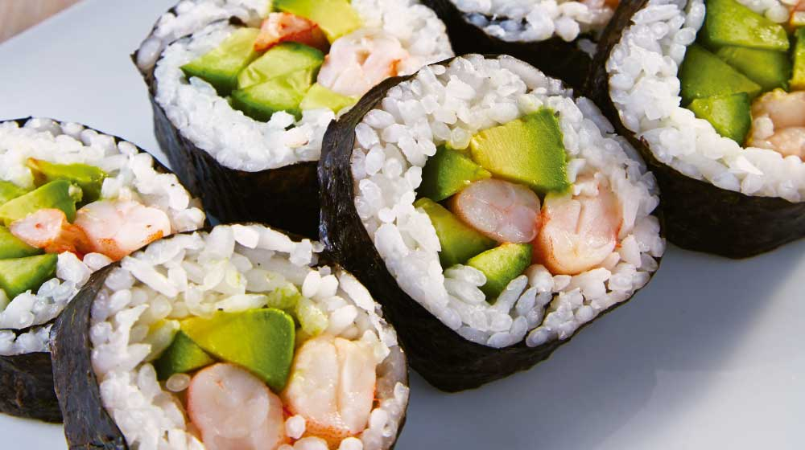

California Sushi Roll

Description
Basic instructions on how to make typical and tasty californian rolls! Add, remove or replace ingredients are all up to you, just make them and enjoy this beautiful flavor
Ingredients
- 1 cup jasmine rice
- 1 ½ cups water
- ½ cup rice vinegar
- 2 tablespoons white sugar
- 2 teaspoons salt
- 3 sheets nori (dry seaweed)
- 1 cucumber, sliced lengthwise
- 2 sticks imitation crab, sliced lengthwise
Directions
- Step 1: Rinse rice until water runs clear. Combine rice and 1 1/2 cups water in a saucepan and bring to a boil, about 5 minutes. Reduce heat to low, cover, and simmer until water is completely absorbed and rice is soft, 8 to 10 minutes.
- Step 2: Use a wooden spoon to transfer cooked rice to a non-metal bowl and set aside to cool.
- Step 3: Meanwhile, combine vinegar, sugar, and salt in a small saucepan and bring to a boil, about 5 minutes. Reduce heat and simmer 1 minute more. Combine vinegar mixture with the cooling rice a few tablespoons at a time until rice is coated; you may not need all of the vinegar mixture. Set aside to finish cooling completely, about 15 minutes.
- Step 4: Place a sheet of nori on a sushi mat with the rough side facing up. Place a small bowl of water nearby. Use wet hands to evenly spread a handful of rice onto the nori. Arrange cucumber and crab across the nori, about 1/2 inch from the edge closest to you. Roll the wrap starting at the close edge and rolling away from yourself. Press and roll again to seal. Repeat with remaining nori, rice, cucumber, and crab.
- Step 5: Dip a sharp knife into water and slice each roll into 8 pieces, rinsing the knife after each cut to prevent sticking.